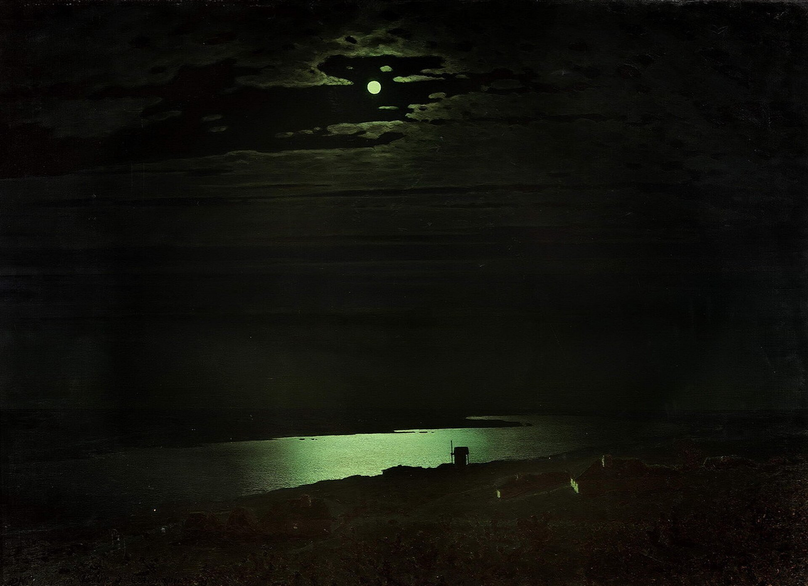
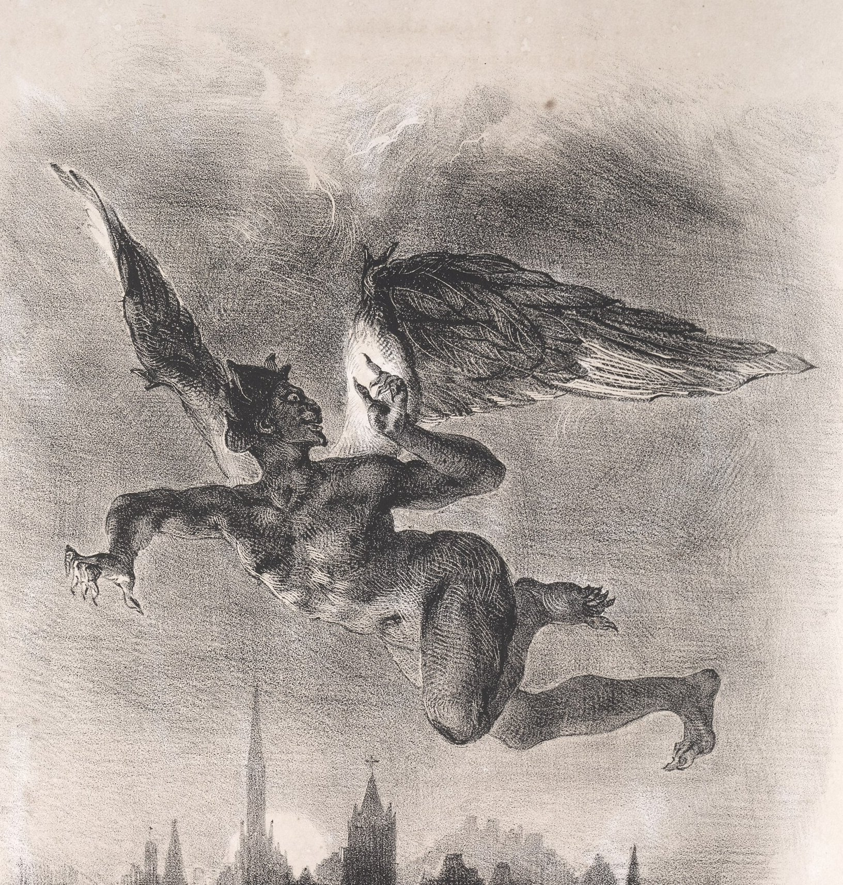

← 目次“‘The chief of the Inner Station,’ he answered in a short tone, looking away. ‘Much obliged,’ I said, laughing. ‘And you are the brickmaker of the Central Station. Every one knows that.’ He was silent for a while. ‘He is a prodigy,’ he said at last. ‘He is an emissary of pity and science and progress, and devil knows what else. We want,’ he began to declaim suddenly, ‘for the guidance of the cause intrusted to us by Europe, so to speak, higher intelligence, wide sympathies, a singleness of purpose.’
‘He is an emissary of pity and science and progress, and devil knows what else.’
‘Who says that?’ I asked. ‘Lots of them,’ he replied. ‘Some even write that; and so he comes here, a special being, as you ought to know.’ ‘Why ought I to know?’ I interrupted, really surprised. He paid no attention. ‘Yes. Today he is chief of the best station, next year he will be assistant-manager, two years more and... but I dare-say you know what he will be in two years’ time. You are of the new gang—the gang of virtue. The same people who sent him specially also recommended you. Oh, don’t say no. I’ve my own eyes to trust.’ Light dawned upon me. My dear aunt’s influential acquaintances were producing an unexpected effect upon that young man. I nearly burst into a laugh. ‘Do you read the Company’s confidential correspondence?’ I asked. He hadn’t a word to say. It was great fun. ‘When Mr. Kurtz,’ I continued, severely, ‘is General Manager, you won’t have the opportunity.’
“He blew the candle out suddenly, and we went outside. The moon had risen. Black figures strolled about listlessly, pouring water on the glow, whence proceeded a sound of hissing; steam ascended in the moonlight, the beaten nigger groaned somewhere. ‘What a row the brute makes!’ said the indefatigable man with the moustaches, appearing near us. ‘Serve him right. Transgression—punishment—bang! Pitiless, pitiless. That’s the only way. This will prevent all conflagrations for the future. I was just telling the manager...’ He noticed my companion, and became crestfallen all at once. ‘Not in bed yet,’ he said, with a kind of servile heartiness; ‘it’s so natural. Ha! Danger—agitation.’ He vanished. I went on to the riverside, and the other followed me. I heard a scathing murmur at my ear, ‘Heap of muffs—go to.’ The pilgrims could be seen in knots gesticulating, discussing. Several had still their staves in their hands. I verily believe they took these sticks to bed with them.
Beyond the fence the forest stood up spectrally in the moonlight, and through that dim stir, through the faint sounds of that lamentable courtyard, the silence of the land went home to one’s very heart—its mystery, its greatness, the amazing reality of its concealed life. The hurt nigger moaned feebly somewhere near by, and then fetched a deep sigh that made me mend my pace away from there. I felt a hand introducing itself under my arm. ‘My dear sir,’ said the fellow, ‘I don’t want to be misunderstood, and especially by you, who will see Mr. Kurtz long before I can have that pleasure. I wouldn’t like him to get a false idea of my disposition....’
“I let him run on, this papier-mache Mephistopheles, and it seemed to me that if I tried I could poke my forefinger through him, and would find nothing inside but a little loose dirt, maybe. He, don’t you see, had been planning to be assistant-manager by and by under the present man, and I could see that the coming of that Kurtz had upset them both not a little. He talked precipitately, and I did not try to stop him.

Eugène Delacroix, Faust: Mephistopheles in the Air, 1828／Public domain／Commons
I let him run on, this papier-mache Mephistopheles, and it seemed to me that if I tried I could poke my forefinger through him, and would find nothing inside but a little loose dirt, maybe.
I had my shoulders against the wreck of my steamer, hauled up on the slope like a carcass of some big river animal. The smell of mud, of primeval mud, by Jove! was in my nostrils, the high stillness of primeval forest was before my eyes; there were shiny patches on the black creek. The moon had spread over everything a thin layer of silver—over the rank grass, over the mud, upon the wall of matted vegetation standing higher than the wall of a temple, over the great river I could see through a sombre gap glittering, glittering, as it flowed broadly by without a murmur. All this was great, expectant, mute, while the man jabbered about himself. I wondered whether the stillness on the face of the immensity looking at us two were meant as an appeal or as a menace.
The moon had spread over everything a thin layer of silver—over the rank grass, over the mud, upon the wall of matted vegetation standing higher than the wall of a temple, over the great river I could see through a sombre gap glittering, glittering, as it flowed broadly by without a murmur.
What were we who had strayed in here? Could we handle that dumb thing, or would it handle us? I felt how big, how confoundedly big, was that thing that couldn’t talk, and perhaps was deaf as well. What was in there? I could see a little ivory coming out from there, and I had heard Mr. Kurtz was in there. I had heard enough about it, too—God knows! Yet somehow it didn’t bring any image with it—no more than if I had been told an angel or a fiend was in there. I believed it in the same way one of you might believe there are inhabitants in the planet Mars. I knew once a Scotch sailmaker who was certain, dead sure, there were people in Mars. If you asked him for some idea how they looked and behaved, he would get shy and mutter something about ‘walking on all-fours.’ If you as much as smiled, he would—though a man of sixty—offer to fight you.
What were we who had strayed in here? Could we handle that dumb thing, or would it handle us?
I would not have gone so far as to fight for Kurtz, but I went for him near enough to a lie. You know I hate, detest, and can’t bear a lie, not because I am straighter than the rest of us, but simply because it appalls me. There is a taint of death, a flavour of mortality in lies—which is exactly what I hate and detest in the world—what I want to forget. It makes me miserable and sick, like biting something rotten would do. Temperament, I suppose. Well, I went near enough to it by letting the young fool there believe anything he liked to imagine as to my influence in Europe. I became in an instant as much of a pretence as the rest of the bewitched pilgrims. This simply because I had a notion it somehow would be of help to that Kurtz whom at the time I did not see—you understand.
There is a taint of death, a flavour of mortality in lies—which is exactly what I hate and detest in the world—what I want to forget.
He was just a word for me. I did not see the man in the name any more than you do. Do you see him? Do you see the story? Do you see anything? It seems to me I am trying to tell you a dream—making a vain attempt, because no relation of a dream can convey the dream-sensation, that commingling of absurdity, surprise, and bewilderment in a tremor of struggling revolt, that notion of being captured by the incredible which is of the very essence of dreams....”
He was just a word for me. I did not see the man in the name any more than you do. Do you see him? Do you see the story? Do you see anything?